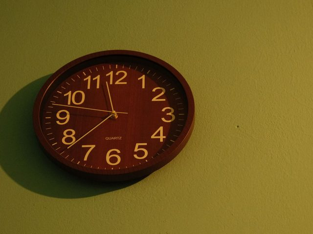
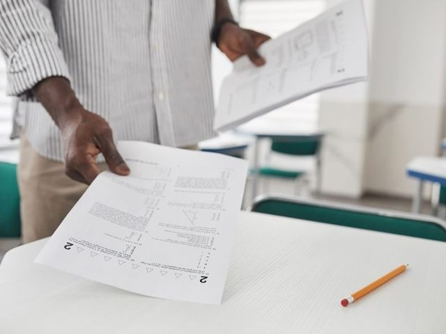
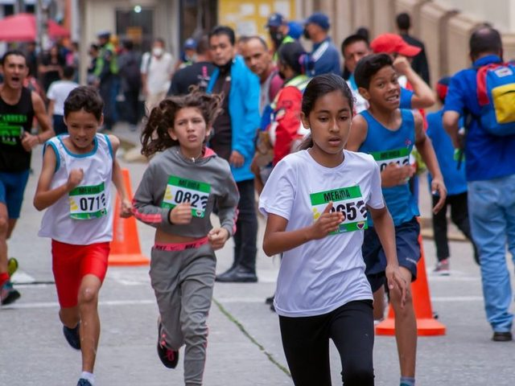
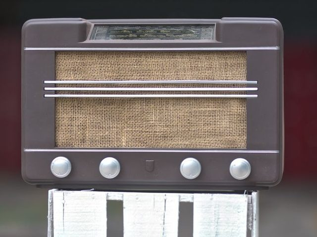
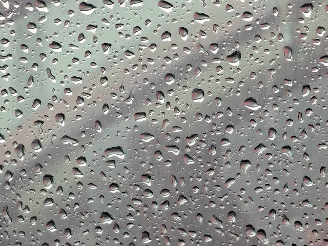
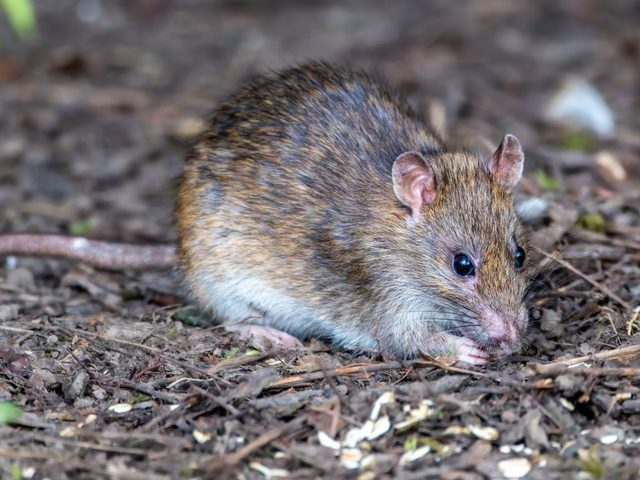
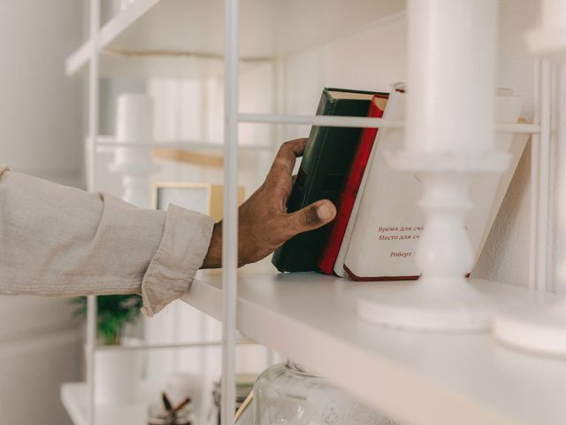

UNIT 38 · VOCABULARY
Q、R 開頭（一）
Q+R-I
32 個單字聽・唸・用
本單元單字一覽
WORD UP「Q+R-I」的 32 個字（quality 到 recently）。紅色＝要複習，藍色標籤＝WORD UP 標熟記、還要在這裡考對。
qualityquarterqueenquestionquickquietquitquitequizrabbitraceradiorailroadrainrainbowrainyraiserangerapidrareratratherreachreadreadyrealrealizereallyreasonreceiverecentrecently
每個字都有 🔊，先聽發音、跟著唸，再看例句。
單字 1–4
⭐
quality
品質n.
This bag is of high quality.
這個包包品質很好。
這個包包品質很好。

quarter
四分之一；一刻鐘n.
It's a quarter past six.
現在六點十五分。
現在六點十五分。
queen
女王；皇后n.
The queen wore a crown.
女王戴著皇冠。
女王戴著皇冠。
question
問題n.
May I ask a question?
我可以問一個問題嗎？
我可以問一個問題嗎？
單字 5–8
quick
快的adj.
Let's have a quick lunch.
我們快速吃個午餐吧。
我們快速吃個午餐吧。
quiet
安靜的adj.
Please be quiet in the library.
在圖書館請保持安靜。
在圖書館請保持安靜。
🛑
quit
放棄；戒掉；辭職v.
Dad quit smoking last year.
爸爸去年戒菸了。
爸爸去年戒菸了。
👌
quite
相當；十分adv.
The test was quite easy.
這次考試相當簡單。
這次考試相當簡單。
單字 9–12

quiz
小考n.
We have an English quiz today.
我們今天有英文小考。
我們今天有英文小考。
rabbit
兔子n.
The rabbit is eating a carrot.
兔子在吃紅蘿蔔。
兔子在吃紅蘿蔔。

race
賽跑；比賽；種族n./v.
Who won the race?
誰贏了賽跑？
誰贏了賽跑？

radio
收音機；廣播n.
I heard the song on the radio.
我在廣播裡聽到這首歌。
我在廣播裡聽到這首歌。
單字 13–16

railroad
鐵路n.
The railroad goes around the island.
鐵路環繞全島。
鐵路環繞全島。

rain
雨；下雨n./v.
It is raining heavily.
正在下大雨。
正在下大雨。
rainbow
彩虹n.
Look! There is a rainbow.
看！有彩虹。
看！有彩虹。

rainy
下雨的adj.
It's a rainy day.
今天是下雨天。
今天是下雨天。
單字 17–20
raise
舉起；養育；募集v.
Raise your hand if you know the answer.
知道答案的人請舉手。
知道答案的人請舉手。
📏
range
範圍；山脈n.
The price range is 100 to 300 dollars.
價格範圍在 100 到 300 元。
價格範圍在 100 到 300 元。
rapid
快速的adj.
The city grew at a rapid speed.
這個城市快速發展。
這個城市快速發展。
💎
rare
稀有的；罕見的adj.
This bird is very rare.
這種鳥非常稀有。
這種鳥非常稀有。
單字 21–24

rat
老鼠（較大的）n.
A rat ran into the hole.
一隻老鼠跑進洞裡。
一隻老鼠跑進洞裡。
🤷
rather
相當；寧願adv.
I would rather stay home.
我寧願待在家。
我寧願待在家。

reach
到達；伸手拿v.
We reached the top of the mountain.
我們到達了山頂。
我們到達了山頂。

read
讀v.
I read a book last night.
我昨晚讀了一本書。
我昨晚讀了一本書。
單字 25–28
ready
準備好的adj.
Are you ready for the test?
你準備好考試了嗎？
你準備好考試了嗎？
💯
real
真的；真實的adj.
Is this a real diamond?
這是真的鑽石嗎？
這是真的鑽石嗎？
💡
realize
了解；意識到；實現v.
I didn't realize it was so late.
我沒意識到已經這麼晚了。
我沒意識到已經這麼晚了。
❗
really
真正地；非常adv.
I really like this song.
我真的很喜歡這首歌。
我真的很喜歡這首歌。
單字 29–32
🤔
reason
理由；原因n.
What is the reason for being late?
遲到的原因是什麼？
遲到的原因是什麼？
📩
receive
收到v.
I received a letter from my friend.
我收到朋友寄來的信。
我收到朋友寄來的信。
🆕
recent
最近的adj.
This is a recent photo of me.
這是我最近的照片。
這是我最近的照片。
🗓️
recently
最近adv.
Have you seen any good movies recently?
你最近有看什麼好電影嗎？
你最近有看什麼好電影嗎？
重點整理
| 說法 | 中文 | 例子 |
|---|---|---|
| quiet / quite | 安靜的 ／ 相當 | Be quiet. ／ quite good |
| quit + V-ing | 戒掉、停止做… | quit eating junk food |
| would rather + 原形 | 寧願… | I'd rather walk. |
| a quarter past / to | 幾點十五分 ／ 差十五分幾點 | a quarter to eight 七點四十五 |
| raise your hand | 舉手 | Raise your hand to ask. |
| be ready for / to V | 準備好… | ready for school |
| recent / recently | 最近的 ／ 最近 | recent news ／ I've been busy recently. |
read 的過去式拼法不變，但唸 /rɛd/；quiz 的複數 quizzes。
快問快答：中文 → 英文
1品質quality
2女王；皇后queen
3快的quick
4放棄；戒掉；辭職quit
5小考quiz
6賽跑；比賽；種族race
7鐵路railroad
8彩虹rainbow
快問快答：英文 → 中文
1raise舉起；養育；募集
2rapid快速的
3rat老鼠（較大的）
4reach到達；伸手拿
5ready準備好的
6realize了解；意識到；實現
7reason理由；原因
8recent最近的
學完了！接下來
複習方法
review
- 回到「📗 單字卡」，按「遮中文」自己考自己
- 再按「遮英文」，看中文說出英文
- 每個例句跟著 🔊 唸一次
準備好了
- 按右上角「📝 前往測驗」
- 測驗錯的題目要訂正到全對
- 訂正完成補送 1 點